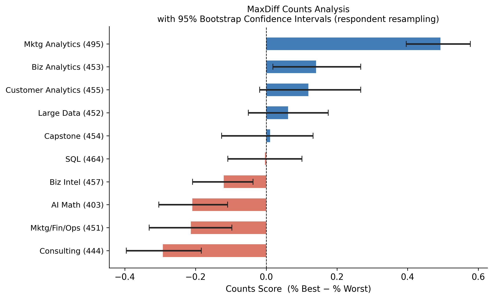
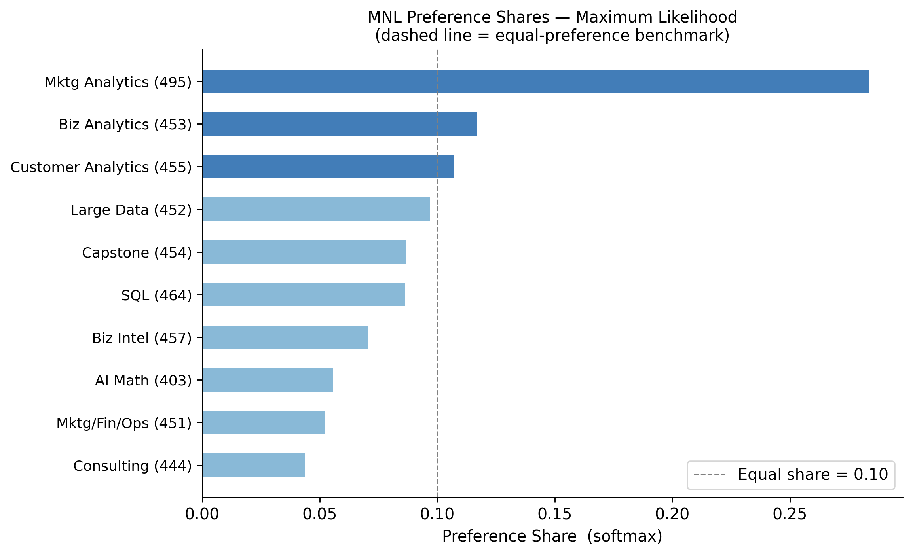
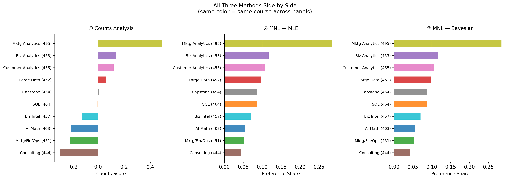

Counts, MLE, and Bayesian Estimation of the MNL Model
MNL
Bayesian
MaxDiff
R
Author
Ria Tang
Published
May 28, 2026
Introduction
MaxDiff (also called Best-Worst Scaling) is a survey method for measuring the strength of people’s preferences across a set of items. In each screen, respondents see a small subset of all items — four in this study — and choose the one they like most and the one they like least. Repeating this across many screens allows us to infer the relative preference for each item from the pattern of choices.
The key advantage of MaxDiff over simple rating scales is that it forces genuine trade-offs. Rating scales suffer from scale-use bias — some respondents habitually give high scores, others cluster around the midpoint — making cross-respondent comparisons unreliable. MaxDiff eliminates this by requiring relative judgments, which tend to be both more reliable and more informative.
In this assignment, the ten items are the core courses in the UCSD Rady MSBA program. The goal is to estimate student preferences using three methods and compare them:
Counts Analysis — a simple score: percentage of times an item was picked best minus percentage of times picked worst
MNL via MLE — a multinomial logit model fit by maximizing the log-likelihood, yielding point estimates and standard errors
MNL via Bayesian MCMC — the same model fit with a Metropolis-Hastings sampler, yielding a full posterior distribution over the parameters
We expect all three methods to agree strongly at the top and bottom of the ranking. The primary advantage of the Bayesian approach over MLE is that uncertainty on derived quantities like preference shares can be read directly from the posterior samples, without approximation.
The Data
Code
import numpy as npimport pandas as pdimport matplotlibimport matplotlib.pyplot as pltfrom scipy.optimize import minimizematplotlib.rcParams['figure.dpi'] =130matplotlib.rcParams['font.size'] =11matplotlib.rcParams['axes.spines.top'] =Falsematplotlib.rcParams['axes.spines.right'] =Falsedf_raw = pd.read_csv('maxdiff_design_and_choices.csv', encoding='utf-8-sig')labels_raw = pd.read_csv('maxdiff_item_labels.csv', encoding='utf-8-sig', usecols=[0, 1])labels_raw.columns = ['item', 'label']short_labels = {1: 'AI Math (403)',2: 'SQL (464)',3: 'Mktg/Fin/Ops (451)',4: 'Large Data (452)',5: 'Biz Analytics (453)',6: 'Consulting (444)',7: 'Customer Analytics (455)',8: 'Capstone (454)',9: 'Mktg Analytics (495)',10: 'Biz Intel (457)'}task_sizes = df_raw.groupby(['Record ID', 'Task']).size().reset_index(name='n')valid_tasks = task_sizes[task_sizes['n'] ==4][['Record ID', 'Task']]df = df_raw.merge(valid_tasks, on=['Record ID', 'Task'])N = df['Record ID'].nunique()T = df.groupby('Record ID')['Task'].nunique().iloc[0]J = df.groupby(['Record ID', 'Task']).size().iloc[0]n_items = df['Item'].nunique()print(f"Respondents (N) : {N}")print(f"Tasks per respondent : {T} (raw data has 15 tasks; the last 7 contain Item 11 and are excluded)")print(f"Items per task (J) : {J} (should be 4 ✓)")print(f"Total items in study : {n_items} (should be 10 ✓)")print(f"Valid tasks total : {N * T}")
Respondents (N) : 85
Tasks per respondent : 8 (raw data has 15 tasks; the last 7 contain Item 11 and are excluded)
Items per task (J) : 4 (should be 4 ✓)
Total items in study : 10 (should be 10 ✓)
Valid tasks total : 680
Code
task_resp = df.groupby(['Record ID', 'Task'])['Response'].apply(list)ok_best = task_resp.apply(lambda x: x.count( 1) ==1).all()ok_worst = task_resp.apply(lambda x: x.count(-1) ==1).all()ok_zero = task_resp.apply(lambda x: x.count( 0) ==2).all()print("Sanity checks:")print(f" Every task has exactly 1 best (Response = 1) : {ok_best}")print(f" Every task has exactly 1 worst (Response = -1) : {ok_worst}")print(f" Every task has exactly 2 other (Response = 0) : {ok_zero}")
Sanity checks:
Every task has exactly 1 best (Response = 1) : True
Every task has exactly 1 worst (Response = -1) : True
Every task has exactly 2 other (Response = 0) : True
Times each item was shown (balance check):
Item label times_shown
1 AI Math (403) 273
2 SQL (464) 274
3 Mktg/Fin/Ops (451) 272
4 Large Data (452) 276
5 Biz Analytics (453) 270
6 Consulting (444) 267
7 Customer Analytics (455) 276
8 Capstone (454) 272
9 Mktg Analytics (495) 274
10 Biz Intel (457) 266
Mean: 272.0, SD: 3.4, Range: 10
The raw file also contains later tasks with only two displayed rows and no worst-choice response. These rows include an Item 11 that is not part of the 10-item label file. Since the assignment focuses on the 10 labeled MSBA classes and the MNL likelihood requires complete best-worst tasks, I restrict the analysis to valid four-item tasks with exactly one best and one worst response. This leaves 680 valid tasks across 85 respondents. The exposure counts for the ten items are highly balanced, as intended by the MaxDiff design.
Counts Analysis
The counts analysis is the simplest approach. For each item \(j\), we compute the percentage of times it was picked as best (out of the number of times it was shown) and the percentage of times it was picked as worst. The score is the difference:
A score near +1 means an item is almost always picked as best when shown; near −1 means it is almost always picked as worst; near 0 means it is middle-of-the-pack or polarizing. No statistical model is needed — the method is fully transparent and easy to explain to a non-technical audience.
np.random.seed(42)respondents = df['Record ID'].unique()N_boot =1000item_order = cnt['Item'].valuesboot_scores = np.zeros((N_boot, 10))for b inrange(N_boot): sampled = np.random.choice(respondents, size=len(respondents), replace=True) bdf = pd.concat([df[df['Record ID'] == r] for r in sampled], ignore_index=True)for i, item inenumerate(item_order): sh = (bdf['Item'] == item).sum()if sh ==0: continue bst = ((bdf['Item'] == item) & (bdf['Response'] ==1)).sum() wst = ((bdf['Item'] == item) & (bdf['Response'] ==-1)).sum() boot_scores[b, i] = bst / sh - wst / shscores = cnt['score'].valuesci_lo = np.array([np.percentile(boot_scores[:, i], 2.5) for i inrange(10)])ci_hi = np.array([np.percentile(boot_scores[:, i], 97.5) for i inrange(10)])fig, ax = plt.subplots(figsize=(9, 5.5))colors = ['#2166ac'if s >0else'#d6604d'for s in scores]y = np.arange(len(scores))ax.barh(y, scores, color=colors, alpha=0.85, height=0.55)ax.hlines(y, ci_lo, ci_hi, color='#222', linewidth=2, zorder=5)ax.plot(ci_lo, y, '|', color='#222', markersize=8)ax.plot(ci_hi, y, '|', color='#222', markersize=8)ax.set_yticks(y)ax.set_yticklabels(cnt['label'].values, fontsize=10)ax.axvline(0, color='black', linewidth=0.8, linestyle='--')ax.set_xlabel('Counts Score (% Best − % Worst)', fontsize=11)ax.set_title('MaxDiff Counts Analysis\nwith 95% Bootstrap Confidence Intervals (respondent resampling)', fontsize=11)ax.invert_yaxis()plt.tight_layout()plt.savefig('counts_plot.png', bbox_inches='tight')plt.show()

Observations. Mktg Analytics (495) ranks first by a wide margin (score = +0.493), with a bootstrap CI that does not overlap any other course — the preference signal is unambiguous. Biz Analytics (453) and Customer Analytics (455) follow in second and third. At the bottom, Consulting (444) scores −0.292 and is clearly the least preferred option. One mild surprise is SQL (464), which scores nearly zero (−0.004, rank 6): despite being a highly marketable skill, students appear about as likely to pick it as best as worst, suggesting they may view it as necessary but not exciting. Capstone (454) sits in the middle with a score close to zero as well, which makes intuitive sense given its obligatory nature.
From MaxDiff Data to MNL Choices
Before fitting an MNL model, we need to understand how MaxDiff survey data converts into MNL choice observations (following the week-5 conjoint/MNL slides).
The MNL model assigns each item \(j\) a utility coefficient \(\beta_j\). On a task showing items \(\{a, b, c, d\}\), the probability that item \(b\) is picked best is the softmax over all four utilities:
The probability that item \(c\) is then picked worst — from the remaining three items — is equivalent to choosing the item with the lowest utility from that set. Flipping the sign of each utility and applying softmax gives:
\[
P(\text{worst} = c \mid \text{best} = b) = \frac{\exp(-\beta_c)}{\exp(-\beta_a) + \exp(-\beta_c) + \exp(-\beta_d)}
\]
Each task therefore yields two MNL observations: a best-pick from all four items, and a worst-pick from the remaining three.
Identifiability. Because the softmax is invariant to adding a constant to every utility, only relative utilities are identified. With 10 total items, we estimate 9 free parameters and fix \(\beta_1 = 0\) (AI Math, Item 1) as the reference category. All other coefficients are interpreted relative to AI Math.
Code
tasks = []for (rid, tid), grp in df.groupby(['Record ID', 'Task']): items = grp.sort_values('Position')['Item'].values best = grp.loc[grp['Response'] ==1, 'Item'].values[0] worst = grp.loc[grp['Response'] ==-1, 'Item'].values[0] tasks.append({'items': items, 'best': best, 'worst': worst})print(f"Total tasks : {len(tasks)} (= {N} respondents × {T} tasks)")print(f"Equivalent MNL obs. : {len(tasks) *2} (best + worst per task)")t = tasks[0]print(f"\nExample task:")print(f" Items shown : {[short_labels[i] for i in t['items']]}")print(f" Best pick : {short_labels[t['best']]}")print(f" Worst pick : {short_labels[t['worst']]}")
Total tasks : 680 (= 85 respondents × 8 tasks)
Equivalent MNL obs. : 1360 (best + worst per task)
Example task:
Items shown : ['Biz Analytics (453)', 'Customer Analytics (455)', 'Large Data (452)', 'AI Math (403)']
Best pick : Customer Analytics (455)
Worst pick : AI Math (403)
where \(j^*_b\) is the best-picked item and \(j^*_w\) is the worst-picked item in each task. We use the log-sum-exp form throughout for numerical stability.
Code
def log_likelihood(beta_9): beta = np.concatenate([[0.0], beta_9]) ll =0.0for t in tasks: idx = t['items'] -1 b = beta[idx] best_idx = t['best'] -1 worst_idx = t['worst'] -1 ll += b[idx == best_idx][0] - np.log(np.sum(np.exp(b))) rem = idx[idx != best_idx] b_rem =-beta[rem] ll += b_rem[rem == worst_idx][0] - np.log(np.sum(np.exp(b_rem)))return llll0 = log_likelihood(np.zeros(9))exp0 =len(tasks) * (np.log(1/4) + np.log(1/3))print(f"Log-likelihood at zero : {ll0:.4f}")print(f"Expected value : {exp0:.4f}{'✓'ifabs(ll0 - exp0) <0.01else'✗'}")
Log-likelihood at zero : -1689.7365
Expected value : -1689.7365 ✓
Converged : True
Message : CONVERGENCE: RELATIVE REDUCTION OF F <= FACTR*EPSMCH
Final log-likelihood : -1572.7307
Code
def numerical_hessian(f, x, eps=1e-4): n =len(x) H = np.zeros((n, n))for i inrange(n):for j inrange(i, n): xpp = x.copy(); xpp[i] += eps; xpp[j] += eps xpm = x.copy(); xpm[i] += eps; xpm[j] -= eps xmp = x.copy(); xmp[i] -= eps; xmp[j] += eps xmm = x.copy(); xmm[i] -= eps; xmm[j] -= eps H[i, j] = (f(xpp) - f(xpm) - f(xmp) + f(xmm)) / (4* eps**2) H[j, i] = H[i, j]return HH = numerical_hessian(lambda x: -log_likelihood(x), result.x)se_9 = np.sqrt(np.diag(np.linalg.inv(H)))se_mle = np.concatenate([[0.0], se_9])shares_mle = np.exp(beta_mle) / np.exp(beta_mle).sum()mle_rank = (-shares_mle).argsort().argsort() +1mle_df = pd.DataFrame({'Item': range(1, 11),'label': [short_labels[i] for i inrange(1, 11)],'beta': beta_mle,'se': se_mle,'share': shares_mle,'mle_rank': mle_rank}).sort_values('mle_rank').reset_index(drop=True)disp = mle_df.copy()disp['beta'] = disp['beta'].map('{:+.3f}'.format)disp['se'] = disp['se'].map('{:.3f}'.format)disp['share'] = disp['share'].map('{:.4f}'.format)disp.columns = ['Item', 'Course', 'β̂', 'SE(β̂)', 'Pref. Share', 'Rank']print(disp.to_string(index=False))print("\nNote: SE(β̂) for Item 1 is 0 because β₁ is fixed for identification — it is not an estimated parameter and should not be interpreted as having no uncertainty.")
Item Course β̂ SE(β̂) Pref. Share Rank
9 Mktg Analytics (495) +1.630 0.146 0.2839 1
5 Biz Analytics (453) +0.744 0.142 0.1171 2
7 Customer Analytics (455) +0.656 0.142 0.1072 3
4 Large Data (452) +0.555 0.140 0.0969 4
8 Capstone (454) +0.443 0.140 0.0867 5
2 SQL (464) +0.438 0.137 0.0862 6
10 Biz Intel (457) +0.236 0.137 0.0704 7
1 AI Math (403) +0.000 0.000 0.0556 8
3 Mktg/Fin/Ops (451) -0.067 0.139 0.0520 9
6 Consulting (444) -0.239 0.141 0.0438 10
Note: SE(β̂) for Item 1 is 0 because β₁ is fixed for identification — it is not an estimated parameter and should not be interpreted as having no uncertainty.
Code
fig, ax = plt.subplots(figsize=(9, 5.5))mle_s = mle_df.sort_values('share', ascending=True)y = np.arange(len(mle_s))colors = ['#2166ac'if s > shares_mle.mean() else'#74add1'for s in mle_s['share']]ax.barh(y, mle_s['share'], color=colors, alpha=0.85, height=0.55)ax.set_yticks(y)ax.set_yticklabels(mle_s['label'].values, fontsize=10)ax.axvline(1/10, color='gray', linewidth=0.9, linestyle='--', label='Equal share = 0.10')ax.set_xlabel('Preference Share (softmax)', fontsize=11)ax.set_title('MNL Preference Shares — Maximum Likelihood\n(dashed line = equal-preference benchmark)', fontsize=11)ax.legend()plt.tight_layout()plt.savefig('mle_shares_plot.png', bbox_inches='tight')plt.show()

MLE vs. Counts. The rankings are identical across both methods — all ten courses appear in the same order. This is not surprising given the strength of the preference signal: with 85 respondents and 8 tasks each, the data are informative enough that both approaches converge to the same ordering. The key difference is in what each method reports. Counts gives a raw proportion difference (e.g., Mktg Analytics = +0.493), while MLE gives preference shares with a clear probability interpretation: if all ten courses appeared on a single screen simultaneously, we would expect 28.4% of best-picks to go to Mktg Analytics. MLE also provides standard errors, enabling hypothesis tests that counts cannot support.
MNL via Bayesian Estimation
We now fit the same MNL model using Bayesian methods, following the week-7 slides on Bayes’ rule and the random-walk Metropolis-Hastings sampler. The posterior is proportional to the likelihood times the prior:
We use a weakly informative multivariate normal prior: \(\boldsymbol{\beta} \sim N(\mathbf{0},\; 10 \cdot I)\). With a standard deviation of approximately 3.2 on each \(\beta\), the prior covers a very wide range of utilities and places almost no constraint on the data.
Step Accept Rate Status
0.04 0.597 too high — reduce step
0.06 0.421 too high — reduce step
0.07 0.347 target range
0.08 0.288 target range
0.09 0.238 too low — increase step
0.1 0.191 too low — increase step
0.12 0.121 too low — increase step
The trace plots fluctuate around stable means after burn-in, without a visible upward or downward drift. This suggests that the chain is mixing adequately for the purposes of this assignment.
Bayes vs. MLE. Posterior means are within 0.013 of the MLE point estimates for every item, and posterior standard deviations are within 0.015 of the MLE standard errors. This close agreement is expected: with 1,360 effective observations and a diffuse prior, the likelihood dominates and the two methods must converge. The small residual differences reflect two sources: (1) the prior exerts a mild shrinkage on estimates toward zero, pulling the largest \(\hat\beta\) (Mktg Analytics, 1.630) very slightly downward; and (2) the posterior standard deviations contain Monte Carlo noise from the finite number of MCMC draws.
Comparing the Three Methods
Code
counts_score_dict = cnt.set_index('Item')['score'].to_dict()counts_rank_dict = cnt.set_index('Item')['counts_rank'].to_dict()summary = pd.DataFrame({'Item': range(1, 11),'label': [short_labels[i] for i inrange(1, 11)],'counts_score': [counts_score_dict[i] for i inrange(1, 11)],'counts_rank': [counts_rank_dict[i] for i inrange(1, 11)],'mle_share': shares_mle,'mle_rank': mle_rank,'bayes_share': post_shares,'bayes_rank': bayes_rank,}).sort_values('mle_rank').reset_index(drop=True)disp = summary.copy()disp['counts_score'] = disp['counts_score'].map('{:+.3f}'.format)disp['mle_share'] = disp['mle_share'].map('{:.4f}'.format)disp['bayes_share'] = disp['bayes_share'].map('{:.4f}'.format)disp.columns = ['Item','Course','Counts Score','Counts Rank','MLE Share','MLE Rank','Bayes Share','Bayes Rank']print(disp.to_string(index=False))
fig, axes = plt.subplots(1, 3, figsize=(16, 5.5))cmap = matplotlib.colormaps['tab10']color_map = {item: cmap(i) for i, item inenumerate(range(1, 11))}def hbar(ax, items, values, title, xlabel, color_map, vline=None): y = np.arange(len(items)) colors = [color_map[i] for i in items] ax.barh(y, values, color=colors, alpha=0.85, height=0.55) ax.set_yticks(y) ax.set_yticklabels([short_labels[i] for i in items], fontsize=8.5) ax.set_xlabel(xlabel, fontsize=10) ax.set_title(title, fontsize=11, pad=10) ax.invert_yaxis()if vline isnotNone: ax.axvline(vline, color='gray', linewidth=0.8, linestyle='--')for spine in ['top', 'right']: ax.spines[spine].set_visible(False)c_order = cnt.sort_values('counts_rank')['Item'].valueshbar(axes[0], c_order, [counts_score_dict[i] for i in c_order],'① Counts Analysis', 'Counts Score', color_map, vline=0)axes[0].axvline(0, color='black', linewidth=0.8, linestyle='--')m_order = mle_df.sort_values('mle_rank')['Item'].valueshbar(axes[1], m_order, [shares_mle[i-1] for i in m_order],'② MNL — MLE', 'Preference Share', color_map, vline=0.1)b_order = bayes_df.sort_values('bayes_rank')['Item'].valueshbar(axes[2], b_order, [post_shares[i-1] for i in b_order],'③ MNL — Bayesian', 'Preference Share', color_map, vline=0.1)fig.suptitle('All Three Methods Side by Side\n(same color = same course across panels)', fontsize=12, y=1.01)plt.tight_layout()plt.savefig('comparison_plot.png', bbox_inches='tight')plt.show()

Where all three methods agree. The rankings are identical across all three methods — every course occupies the same position whether we use counts, MLE, or Bayesian estimation. The top and bottom are especially stable: Mktg Analytics (495) leads by a wide margin in every method, and Consulting (444) is last in all three. This level of consistency reflects a dataset where the preference signal is strong relative to the noise.
Where they might disagree (and why). With a weaker signal — fewer respondents, fewer tasks, or items with more similar utilities — we would expect the middle of the ranking (roughly ranks 4–7) to shuffle across methods. In this dataset, Capstone (454), SQL (464), and Large Data (452) have fairly similar utilities, and a smaller sample might reorder them differently.
What MNL adds over counts. MNL uses the full choice-set structure: each best and worst decision is evaluated relative to the other items that appeared on the same screen. Counts uses exposure-adjusted summaries, but it does not model the probability of choosing one item over the specific alternatives shown in that task. This makes MNL statistically more efficient and produces preference shares with a natural probability interpretation, along with standard errors that support hypothesis testing.
What Bayes adds over MLE. The key advantage of the Bayesian approach is that uncertainty on derived quantities like preference shares is immediately available: for each MCMC draw, compute the softmax transformation and take percentiles across draws. Doing the same thing from MLE requires the delta method, which is approximate and more complex to implement. Bayesian estimation also extends naturally to hierarchical models that estimate individual-level preferences — a straightforward extension that is considerably harder to achieve with MLE.
Discussion
Substantive findings. Students in this MSBA cohort most strongly prefer Mktg Analytics (495), which receives a preference share of roughly 28% — nearly three times the equal-share benchmark of 10%. Biz Analytics (453, ≈11.7%) and Customer Analytics (455, ≈10.7%) follow in second and third. The common thread among the top-ranked courses is a focus on applied data analysis with direct business relevance. At the other end, Consulting (444) is the least preferred course by a clear margin, scoring below all others across all three methods. Mktg/Fin/Ops (451) and AI Math (403) also rank near the bottom.
One notable finding is SQL (464). Despite being one of the most practically valued skills in the job market, it lands in sixth place with a near-zero counts score. This may reflect a perception among MSBA students that SQL is a necessary baseline rather than a differentiating course — they may feel they already know it or can learn it independently, and so it neither excites nor deters them relative to more specialized offerings.
Methodological takeaways. The three approaches serve different purposes:
Counts is the right tool for a quick descriptive summary. It requires no modeling assumptions, is easy to communicate to a non-technical audience, and produces a result any manager can act on immediately.
MLE MNL is appropriate when rigorous point estimates with classical standard errors are needed — for example, when reporting to a committee that expects confidence intervals or significance tests.
Bayesian MNL is the best choice when uncertainty on derived quantities (preference shares, market-share simulations, “what if we added a new course?” scenarios) is important, or when the ultimate goal is a hierarchical model that estimates individual-level preferences and accounts for heterogeneity across students.
Caveats. The survey was administered to a self-selected sample of MSBA students, so results may not generalize to future cohorts or other programs. Preferences are likely influenced by factors not captured here: which courses a student has already completed, their academic background (engineering vs. business), and where they are in the program. MaxDiff also measures only relative preferences — it cannot detect a situation where all courses are uniformly liked or disliked.
Next steps. If time allowed, the most valuable extension would be a Hierarchical Bayes MNL that estimates a separate \(\boldsymbol{\beta}\) vector for each respondent, drawn from a population-level distribution. This would reveal whether student preferences are homogeneous or whether meaningful subgroups exist — information that would be directly useful for advising, course scheduling, and curriculum design.